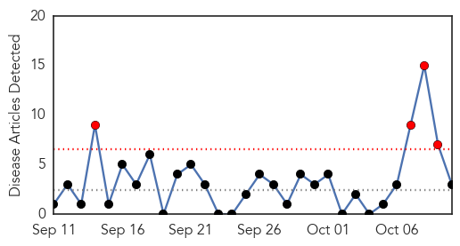
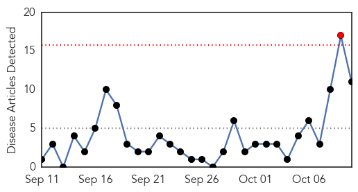
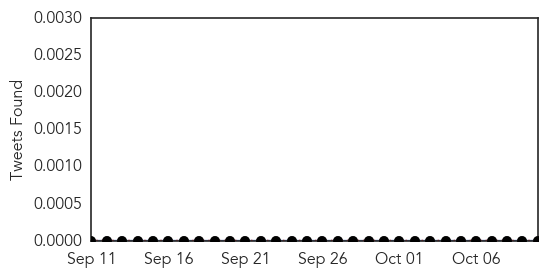
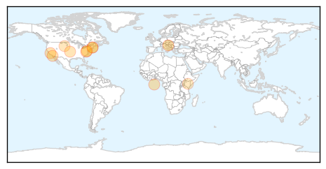
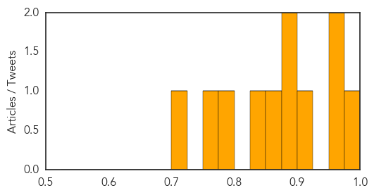

Swine Flu
30-Day Web Trend
4 alerts, 0 warnings

30-Day Twitter Trend
0 alerts, 0 warnings

Article Locations

Article Confidences

Top Articles:
Top Tweets:
- 0.807
- The virus returns: 70 swine flu cases reported in 5 days - The Times of India http://t.co/vw6jP0XV22 http://t.co/C61Q9MQe0c
Measles
30-Day Web Trend
1 alerts, 0 warnings

30-Day Twitter Trend
0 alerts, 0 warnings

Article Locations
Article Confidences
Top Articles:
- 0.977
- Measles can be a lesser-known risk for travellers
- 0.967
- Many Americans Don't Get Recommended Vaccines Before Travel
- 0.965
- Young child diagnosed with measles in northern Virginia
- 0.911
- Suburban measles cases similar to Disneyland strain, can't be connected
- 0.899
- Immunization Gap Leaves 9 Million US Children, Americans Traveling Overseas At Risk For Measles
- 0.886
- WBOY.com: Clarksburg, Morgantown: News, Sports, Weather
- 0.862
- 1 in 8 infants in US at risk of contracting measles due to gaps in vaccination rates
- 0.850
- Vaccination Gaps Make Measles Outbreak Likely in the US
- 0.781
- Pushing vaccines, but not patients
- 0.762
- Not enough children vaccinated for measles
- 0.724
- My child didn't get rotavirus vaccine
Top Tweets:
-
No tweets found for Oct 10, 2015